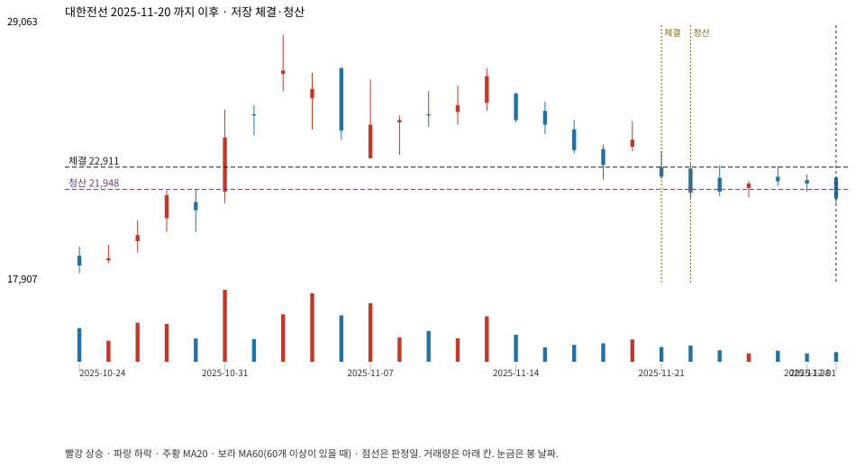

계좌를 다시 돌리지 않았다. 아래는 저장된 주문·체결·청산·비용·손익이다.

{
"case_id": "24a5ffe8459ff934",
"status": "closed",
"trade": {
"symbol": "001440.KS",
"signal_date": "2025-11-20",
"quantity": 463,
"entry": 24100,
"stop": 21959,
"target": 28650,
"planned_risk": 1017686.7419914983,
"reserved_cash": 11169458.299999999,
"fill": {
"date": "2025-11-21",
"price": 22911.449999999997,
"fee": 10608.001349999999
},
"exit": {
"date": "2025-11-24",
"price": 21948.0205,
"reason": "stop",
"net_pnl": -466837.79334149696,
"ambiguous_bar": false
}
},
"cost": "research fee 10bp each side, slippage 5bp; amounts below are the stored ledger, not a new run",
"chart": "c\/24a5ffe8459ff934.svg"
}